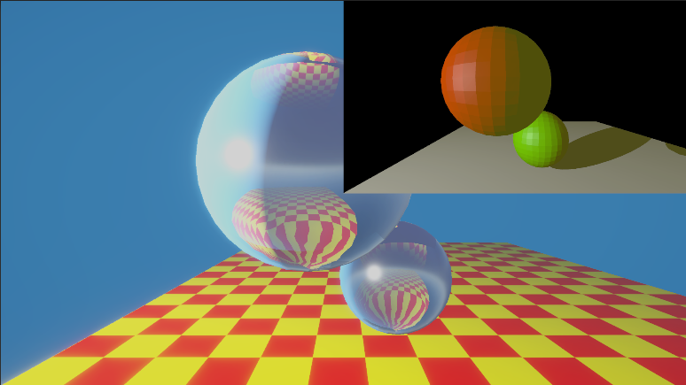
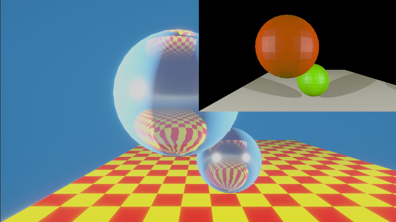
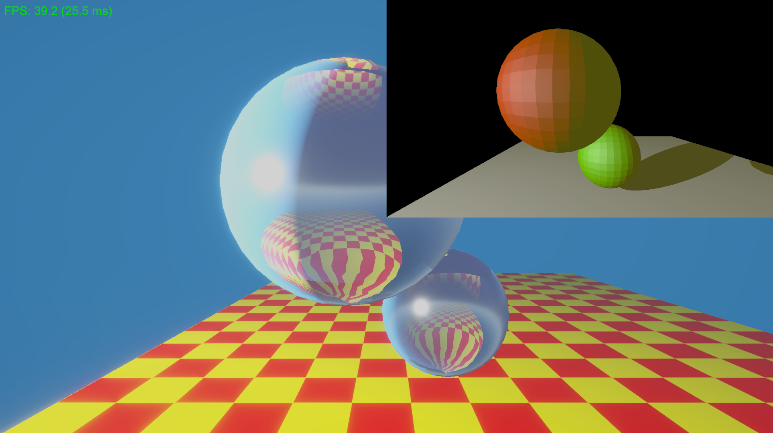
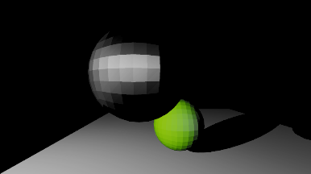
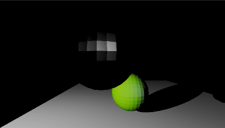
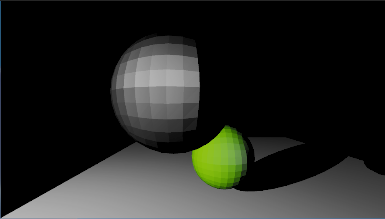
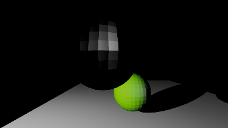
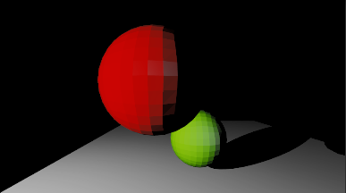

Basic Shading
Implementing illumination models

Phong shading with 1 light (ambient is yellow)

Phong shading with 2 lights

Phong-Blinn shading
Ashikhmin-Shirley

Rd=0, Rs=0.9, nu=10, nv=50

Rd=0, Rs=0.9, nu=50, nv=50

Rd=0, Rs=0.9, nu=10, nv=10

Rd=0, Rs=0.9, nu=50, nv=10

Rd=red, Rs=0.04, nu=50, nv=50

Rd=red, Rs=0.04, nu=50, nv=50, with super-sampling 2x2. I know it looks identical xd.
Implementation Overview
Instead of returning random simple colors, we now implement Phong shading with multiple lights support.
Additionally rendered with Phong-Blinn, Ashikhmin-Shirley.
Ray Tracer Implementation
// Compute shader HLSL
[numthreads(8, 8, 1)]
void CSMain(uint3 id : SV_DispatchThreadID)
{
uint width, height;
Result.GetDimensions(width, height);
if (id.x >= width || id.y >= height)
return;
// Calculate ray in Camera Space
float2 uv = float2((id.xy + 0.5) / float2(width, height) * 2.0 - 1.0);
float3 rayOrigin = float3(0, 0, 0); // cam is at origin
float3 rayDirection = normalize(float3(uv.x * _AspectRatio, uv.y, -_FocalLength)); // shot ray through pixel, in -Z direction
// calculate intersection with triangles
float closestT = 1e30;
int hitTriangleIndex = -1;
float3 hit_v0, hit_v1, hit_v2;
for (int i = 0; i < _TriangleCount; i++)
{
// change triangle vertex from world space to camera space, this is not ideal but this can let the calculation be in camera space
float3 v0 = mul(_WorldToCamera, float4(_Triangles[i].v0, 1)).xyz;
float3 v1 = mul(_WorldToCamera, float4(_Triangles[i].v1, 1)).xyz;
float3 v2 = mul(_WorldToCamera, float4(_Triangles[i].v2, 1)).xyz;
float t = RayTriangleIntersect(rayOrigin, rayDirection, v0, v1, v2);
if (t > 0.001 && t < closestT) //0.001 to avoid self-intersection
{
closestT = t;
hitTriangleIndex = i;
hit_v0 = v0;
hit_v1 = v1;
hit_v2 = v2;
}
}
float3 irradiance = float3(0, 0, 0);
if (hitTriangleIndex != -1)
{
float3 hitPoint = rayOrigin + closestT * rayDirection;
Triangle tri = _Triangles[hitTriangleIndex];
Material mat = _Materials[tri.materialIndex];
// normal
float3 N = normalize(cross(hit_v2 - hit_v0, hit_v1 - hit_v0));
// view (hitpoint to cam)
float3 V = normalize(-rayDirection);
// phong ambient
irradiance = mat.ambient * mat.ka;
//multiple light sources
for (int j = 0; j < _LightCount; j++)
{
LightSource light = _LightSources[j];
float3 lightPos = mul(_WorldToCamera, float4(light.position, 1)).xyz;
float3 L = normalize(lightPos - hitPoint);
float directionCheck = dot(N, L);
if (directionCheck <= 0) //if the light is behind the surface, skip this light source
continue;
float distToLight = length(lightPos - hitPoint);
// Shadow Ray
bool inShadow = false;
float3 shadowOrigin = hitPoint + N * 0.001; // avoid self-intersection => shadow acne
for (int k = 0; k < _TriangleCount; k++)
{
if (k == hitTriangleIndex)
continue;
// transform to camera space
float3 sv0 = mul(_WorldToCamera, float4(_Triangles[k].v0, 1)).xyz;
float3 sv1 = mul(_WorldToCamera, float4(_Triangles[k].v1, 1)).xyz;
float3 sv2 = mul(_WorldToCamera, float4(_Triangles[k].v2, 1)).xyz;
float st = RayTriangleIntersect(shadowOrigin, L, sv0, sv1, sv2);
if (st > 0.001 && st < distToLight)
{
inShadow = true;
break;
}
}
if (!inShadow)
{
// Diffuse
float diff = max(dot(N, L), 0);
irradiance += mat.diffuse * diff * light.color * mat.kd;
// Specular (Phong)
float3 R = reflect(-L, N);
float spec = pow(max(dot(R, V), 0), mat.shininess);
irradiance += mat.specular * spec * light.color * mat.ks;
}
}
}
Result[id.xy] = float4(irradiance, 1);
}
Code explaination
- Check ray hit with the closest triangle. If hit, calculate irradiance with every light source.
- This approach is pretty inefficient bacuse it for loops triangles several times. with 1 light source is 43fps, 2 light source drops to 30fps.
- Be aware of the cross product for the normal, Left hand order or right hand order will cause different results.
Phong Blinn
// Compute shader HLSL
// Specular (Phong-Blinn)
float3 H = normalize(L + V);
float spec = pow(max(dot(N, H), 0), mat.shininess);
irradiance += mat.specular * spec * light.color * mat.ks;
Code explaination
- The only difference is specular lighting. Instead of using the reflection vector R, we use the half vector H (the average of L and V). Use N and H dot product.
Ashikhmin-Shirley
// Compute shader HLSL
if (hitTriangleIndex != -1)
{
float3 hitPoint = rayOrigin + closestT * rayDirection;
Triangle tri = _Triangles[hitTriangleIndex];
Material mat = _Materials[tri.materialIndex];
// normal
float3 N = normalize(cross(hit_v2 - hit_v0, hit_v1 - hit_v0));
// view (hitpoint to cam)
float3 V = normalize(-rayDirection); // k2
// phong ambient
irradiance = mat.ambient * mat.ka;
//multiple light sources
for (int j = 0; j < _LightCount; j++)
{
LightSource light = _LightSources[j];
float3 lightPos = mul(_WorldToCamera, float4(light.position, 1)).xyz;
float distToLight = length(lightPos - hitPoint);
float attenuation = 1.0 / (distToLight * distToLight);
float3 effectiveLight = light.color * light.intensity * attenuation;
// prepare the vectors (V is prepared already)
float3 L = normalize(lightPos - hitPoint); // k1 facing the light source
float3 H = normalize(L + V); // k3 halfway vector
// tangent space (N is prepared already)
float3 T = normalize(tri.tangent); // u
float3 B = cross(N, T); // v
// dot products
float dotNH = max(dot(N, H), 0.0001);
float dotNV = max(dot(N, V), 0.0001);
float dotNL = max(dot(N, L), 0.0001);
float dotHL = max(dot(H, L), 0.0001);
float dotHT = dot(H, T);
float dotHB = dot(H, B);
// specular
float denom = 1.0 - dotNH * dotNH;
float exponent = (mat.nu * dotHT * dotHT + mat.nv * dotHB * dotHB) / max(denom, 0.0001);
float specNum = sqrt((mat.nu + 1) * (mat.nv + 1)) * pow(dotNH, exponent);
float specDen = 8.0 * 3.14159 * dotHL * max(dotNL, dotNV);
float specTerm = specNum / specDen;
// Fresnel
float3 F = mat.specular + (1.0 - mat.specular) * pow(1.0 - dotHL, 5);
float3 specularResult = F * specTerm;
// diffuse
float diffuseFactor = (1.0 - pow(1.0 - dotNL / 2.0, 5)) * (1.0 - pow(1.0 - dotNV / 2.0, 5));
float3 diffuseResult = (28.0 * mat.diffuse / (23.0 * 3.1415926)) * (1.0 - mat.specular) * diffuseFactor;
// Shadow Ray
bool inShadow = false;
float3 shadowOrigin = hitPoint + N * 0.001; // avoid self-intersection => shadow acne
for (int k = 0; k < _TriangleCount; k++)
{
if (k == hitTriangleIndex)
continue;
// transform to camera space
float3 sv0 = mul(_WorldToCamera, float4(_Triangles[k].v0, 1)).xyz;
float3 sv1 = mul(_WorldToCamera, float4(_Triangles[k].v1, 1)).xyz;
float3 sv2 = mul(_WorldToCamera, float4(_Triangles[k].v2, 1)).xyz;
float st = RayTriangleIntersect(shadowOrigin, L, sv0, sv1, sv2);
if (st > 0.001 && st < distToLight)
{
inShadow = true;
break;
}
}
if (!inShadow)
{
irradiance += (specularResult + diffuseResult) * effectiveLight * dotNL;
}
}
}
Code explaination
- Added light attenuation so it looks different from previous Phong and Phong-Blinn implementations.
- Even without light attenuation, the lighting is more realistic and darker.
- I was expecting to see high quality results but I guess the ray tracer still needs more work to achieve that.
- fps performance is about the same as phong and phong-blinn
Supersampling
// Compute shader HLSL
float3 totalIrradiance = float3(0, 0, 0);
//2x2 supersampling
for (int x = 0; x < 2; x++)
{
for (int y = 0; y < 2; y++)
{
float2 subPixelOffset = (float2(x, y) + 0.5) * 0.5; //0, 1 => 0.25, 0.75
float2 uv = float2((id.xy + subPixelOffset) / float2(width, height) * 2.0 - 1.0); // subPixelOffset was 0.5 without supersampling
// Calculate ray in Camera Space
float3 rayOrigin = float3(0, 0, 0); // cam is at origin
float3 rayDirection = normalize(float3(uv.x * _AspectRatio, uv.y, -_FocalLength)); // shot ray through pixel, in -Z direction
totalIrradiance += TraceRay(rayOrigin, rayDirection);
}
}
totalIrradiance /= 4;
totalIrradiance = totalIrradiance / (totalIrradiance + float3(1, 1, 1)); // simple tone mapping
Result[id.xy] = float4(totalIrradiance, 1);
Code explaination
- Added extra tone mapping
- about 10 fps
Technologies Used
Course:
Global Illumination
Year:
2026